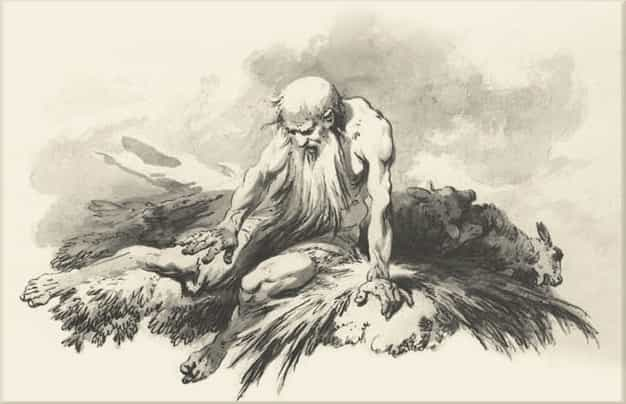
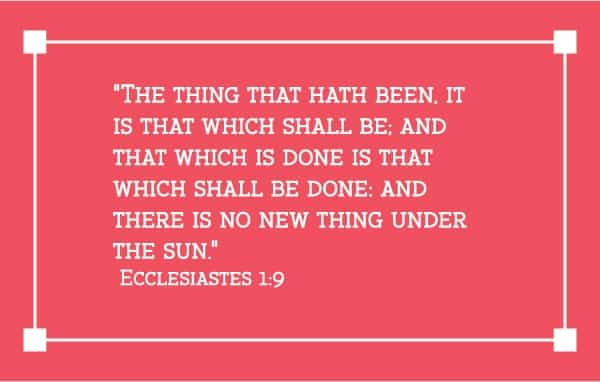

Daryush "Roosh" Valizadeh created ROK in October 2012. You can visit his blog at RooshV.com or follow him on Twitter and Facebook.


The most interesting books of the Bible for those who aren’t believers in God are the wisdom books of Job and Ecclesiastes. Written from a philosophical point of view, they attempt to help people live with suffering and pain while putting existence into context.

Job is a devout believer in God who follows all of His rules. He has been blessed with incredible wealth and numerous children. Satan then challenges God by arguing that Job is only faithful because of what he has gained, and that he would immediately curse God if everything was taken away from him. God allows Satan to destroy him, taking his wealth and killing all of his children.
Once the misfortune befalls Job, his wife implores him to curse God, but Job refuses. Instead, he openly laments at why God is allowing him to suffer. He even asks God to allow him to die.
I would rather be strangled—
rather die than suffer like this.
I hate my life and don’t want to go on living
Oh, leave me alone for my few remaining days. (Job 7:15-16)Why make me your target?
Am I a burden to you?
Why not just forgive my sin
and take away my guilt?
For soon I will lie down in the dust and die.
When you look for me, I will be gone. (Job 7:20-21)What do you gain by oppressing me?
Why do you reject me, the work of your own hands,
while smiling on the schemes of the wicked? (Job 10:3)
He then has a series of poetic dialogues with priestly men in an attempt to explain God’s justice. Job asks some pointed questions, implying that those who are eager to sin seem to experience more prosperity than those who closely follow God’s words.
The godless seem like a lush plant growing in the sunshine,
its branches spreading across the garden.
Its roots grow down through a pile of stones;
it takes hold on a bed of rocks.
But when it is uprooted,
it’s as though it never existed! (Job 8:16-18)When a plague sweeps through,
he laughs at the death of the innocent.
The whole earth is in the hands of the wicked,
and God blinds the eyes of the judges.
If he’s not the one who does it, who is? (Job 9:23-24)
Just like how there are so many laws in the legal code that you are always on the hook for something illegal, there are also so many possible sins that it may be impossible to live a clean life.
Whatever happens, I will be found guilty.
So what’s the use of trying?
Even if I were to wash myself with soap
and clean my hands with lye,
you would plunge me into a muddy ditch,
and my own filthy clothing would hate me. (Job 9:29-31)
The men that Job spills his guts to state that he’s sinning in some way and knows nothing about how God works, and that he must grin and bear it instead of questioning God’s actions.
Pay attention to this, Job.
Stop and consider the wonderful miracles of God!
Do you know how God controls the storm
and causes the lightning to flash from his clouds?
Do you understand how he moves the clouds
with wonderful perfection and skill?
When you are sweltering in your clothes
and the south wind dies down and everything is still,
he makes the skies reflect the heat like a bronze mirror.
Can you do that? (Job 37:14-18)
God appears and asks Job how dare he question His actions, even though those actions amounted to an agreement with Satan.
Who is this that questions my wisdom
with such ignorant words?
Brace yourself like a man,
because I have some questions for you,
and you must answer them.
Where were you when I laid the foundations of the earth?
Tell me, if you know so much.
Who determined its dimensions
and stretched out the surveying line?
What supports its foundations,
and who laid its cornerstone
as the morning stars sang together
and all the angels shouted for joy? (Job 38:2-7)
God goes on to describe his powers and then serves a “How dare you?” argument to Job, who then accepts his utter impotence.
Then the LORD said to Job,
“Do you still want to argue with the Almighty?
You are God’s critic, but do you have the answers?”
Then Job replied to the LORD,
“I am nothing—how could I ever find the answers?
I will cover my mouth with my hand.
I have said too much already.
I have nothing more to say.” (Job 40:2-5)You asked, ‘Who is this that questions my wisdom with such ignorance?’
It is I—and I was talking about things I knew nothing about,
things far too wonderful for me.
You said, ‘Listen and I will speak!
I have some questions for you,
and you must answer them.’
I had only heard about you before,
but now I have seen you with my own eyes.
I take back everything I said,
and I sit in dust and ashes to show my repentance.” (Job 42:3-6)
Other parts of the Bible channel Job by asking why bad on Earth is allowed to continue:
Wake up, O Lord! Why do you sleep?
Get up! Do not reject us forever.
Why do you look the other way?
Why do you ignore our suffering and oppression?
We collapse in the dust,
lying face down in the dirt.
Rise up! Help us!
Ransom us because of your unfailing love. (Psalm 44:23-26)
And the usual response is to not question God:
What sorrow awaits those who argue with their Creator.
Does a clay pot argue with its maker?
Does the clay dispute with the one who shapes it, saying,
‘Stop, you’re doing it wrong!’
Does the pot exclaim,
‘How clumsy can you be?’
How terrible it would be if a newborn baby said to its father,
‘Why was I born?’
or if it said to its mother,
‘Why did you make me this way?’ (Isaiah 5:9-10)
After Job stopped questioning God, he was rewarded with even greater prosperity than before:
So the LORD blessed Job in the second half of his life even more than in the beginning. For now he had 14,000 sheep, 6,000 camels, 1,000 teams of oxen, and 1,000 female donkeys. He also gave Job seven more sons and three more daughters. He named his first daughter Jemimah, the second Keziah, and the third Keren-happuch. In all the land no women were as lovely as the daughters of Job. And their father put them into his will along with their brothers. Job lived 140 years after that, living to see four generations of his children and grandchildren. Then he died, an old man who had lived a long, full life. (Job 42:12-17)
You have to be patient with God:
Those who plant in tears will harvest with shouts of joy. They weep as they go to plant their seed, but they sing as they return with the harvest. (Psalm 126:5-6)
The lesson of this story seems to be one of stoicism: accept your fate, don’t question it, and understand that what you have now can be taken from you at a moment’s notice if God wants to, no matter how cleanly you have lived in his honor. Ironically, this book did more to make me question God’s wisdom than any other.

The next wisdom book is Ecclesiastes, purportedly written by King’s David son, Solomon, who amassed one-thousand wives during his reign as King of Israel. His wife collection led to him serving other gods, and he was punished for it when God broke up the Kingdom of Israel. Ecclesiastes is the book that Solomon wrote at the end of his life, sharing all that he learned.
“Everything is meaningless,” says the Teacher, “completely meaningless!” What do people get for all their hard work under the sun? Generations come and generations go, but the earth never changes. The sun rises and the sun sets, then hurries around to rise again. The wind blows south, and then turns north. Around and around it goes, blowing in circles. Rivers run into the sea, but the sea is never full. Then the water returns again to the rivers and flows out again to the sea. Everything is wearisome beyond description. No matter how much we see, we are never satisfied. No matter how much we hear, we are not content. History merely repeats itself. It has all been done before. Nothing under the sun is truly new. (Ecclesiastes 1:2-11)
What is the point of accumulating wisdom in life? Why work hard?
For in much wisdom is much grief: and he that increaseth knowledge increaseth sorrow. (Ecclesiastes 1:18)
I thought, “Wisdom is better than foolishness, just as light is better than darkness. For the wise can see where they are going, but fools walk in the dark.” Yet I saw that the wise and the foolish share the same fate. Both will die. So I said to myself, “Since I will end up the same as the fool, what’s the value of all my wisdom? This is all so meaningless!” For the wise and the foolish both die. (Ecclesiastes 2:13-16)
So what do people get in this life for all their hard work and anxiety? Their days of labor are filled with pain and grief; even at night their minds cannot rest. It is all meaningless. (Ecclesiastes 2:22-23)
All is vanity:
For that which befalleth the sons of men befalleth beasts; even one thing befalleth them: as the one dieth, so dieth the other; yea, they have all one breath; so that a man hath no preeminence above a beast: for all is vanity. All go unto one place; all are of the dust, and all turn to dust again. (Ecclesiastes 3:19-20)
Promiscuous and bad women are sent forth as a punishment from God:
I discovered that a seductive woman is a trap more bitter than death. Her passion is a snare, and her soft hands are chains. Those who are pleasing to God will escape her, but sinners will be caught in her snare. (Ecclesiastes 7:26)
Solomon tries to convince himself that evil will not prosper, but he can’t help coming back to the fact that it does:
When a crime is not punished quickly, people feel it is safe to do wrong. But even though a person sins a hundred times and still lives a long time, I know that those who fear God will be better off. The wicked will not prosper, for they do not fear God. Their days will never grow long like the evening shadows. And this is not all that is meaningless in our world. In this life, good people are often treated as though they were wicked, and wicked people are often treated as though they were good. This is so meaningless! (Ecclesiastes 8:11-16)
At this moment, it seems that Solomon goes off the rails by seemingly promoting a life of debauchery:
So I recommend having fun, because there is nothing better for people in this world than to eat, drink, and enjoy life. That way they will experience some happiness along with all the hard work God gives them under the sun. (Ecclesiastes 8:15)
One interpretation of this is that if you live in sin like Solomon, you will eventually come to the conclusion that life is meaningless, all is for naught, and the only purpose is to have fun. The book may have been included in the Bible to serve as an example of what will happen to you if behave as Solomon and come to the end of your life thinking that it wasn’t worth it. I hope this was the intended result because otherwise it would cause you to lose faith in God’s own wisdom in justice, just like with Job.
The wisdom books of the Bible raise questions of God’s justice and plans for his human subjects. Why do people suffer or prosper? Why does life feel like it’s not being guided by God? These questions vexed the Jews enough that they honored other Gods to get more immediate results. And then Jesus Christ came along to say that it will all be worth it—not necessarily now, but in the eternal afterlife, as long as you accept him as your savior.
Read More: The Old Testament’s “Sexist” Views On Female Behavior